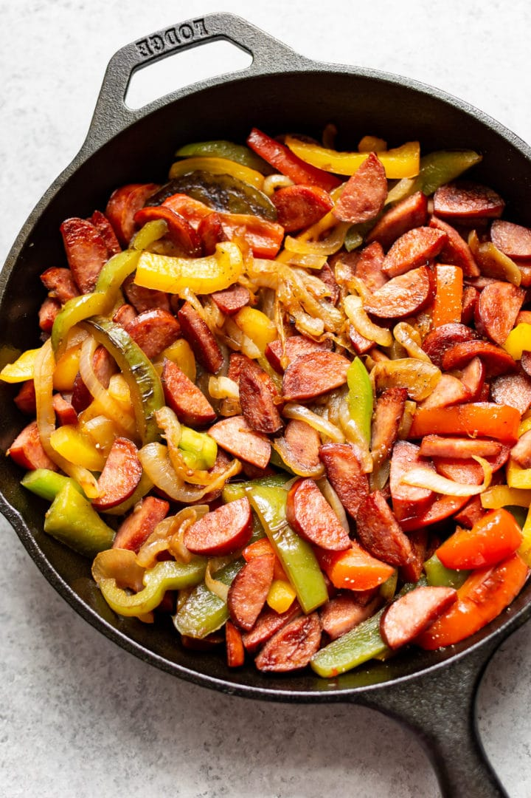

Sausage and Peppers

Description
This is a tasty but simple recipe I learned for sausage and peppers while camping out in the backcountry. It is tasty and greatly satisfies your hunger while still being healthy. Eat it with some fresh italian bread for maximum satisfaction!
Ingredients
Sausage
- Green and Red Peppers
- Onions
- Garlic
Steps
- Sautee the onions and garlic over low heat, stir often
- When the onions start to soften up add your peppers to the same pan as the onions
- Slice your sausage into hearty chunks and brown them in a separate pan
- Once everything is cooked add it all into one bowl and mix it up
- Serve with some fresh italian bread
- Leftovers make a great sandwich!